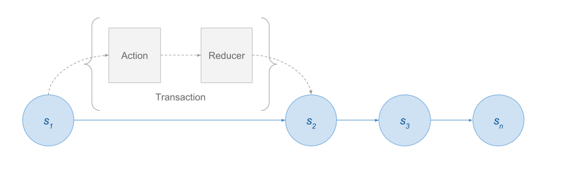

Redux Training
You might not need Redux
or: use the right tool for the job
https://medium.com/@dan_abramov/you-might-not-need-redux-be46360cf367- It adds a layer of indirection that might not be necessary for a small app.
- There is a learning curve for developers who are not comfortable with functional programming.
Redux imposes the following constraints:
- Application state must be represented using plain objects and arrays.
- Changes in the system must be described using plain objects.
- Logic for handling changes to application state must be implemented as pure functions.
Flux
Architecture
Redux
Flux + Functional Programming
Benefits
- Deterministic state and view renders.
- Persist state and boot the app from it.
- Reproduce bug scenarios from serialized user actions and a state snapshot.
- Maintain an undo history. "Time travel" debugging.
- User workflows are complex.
- User workflows are disparate; e.g., regular users vs. administrators.
- The app uses WebSockets or server-sent events.
- View data comes from multiple sources.
- You work for BrieBug
Flux

Transactional state model
Actions
{
type: ADD_TODO,
text: 'Build my first Redux app'
}
A "record" of the state transaction.
Describes what happened.
The only source of information for the store.
Reducers
Actions describe the fact that something happened. They don't specify how the application's state changes in response. This is the job of reducers.
Reducers must be pure functions.
Reducers must not mutate state.
Reducers must not produce side effects.
Reducers must not call non-pure functions.
Store
Source of record for the application state.
{
"search": {
"ids": [],
"loading": false,
"query": ""
},
"books": {
"ids": [
"TI0Sj6er8UEC",
"tYrPCwAAQBAJ"
],
"entities": {
"TI0Sj6er8UEC": {
"kind": "books#volume",
"id": "TI0Sj6er8UEC",
"etag": "kLWgRHNHB0Y",
"selfLink": "https://www.googleapis.com/books/v1/volumes/TI0Sj6er8UEC",
"volumeInfo": {
"title": "Software Reliability",
"authors": [
"Hoang Pham"
],
"publisher": "Springer Science & Business Media",
"publishedDate": "2000",
"description": "this book presents detailed analytical models, state-of-the-art techniques, methodologies, and tools used to assess the reliability of software systems.",
"industryIdentifiers": [
{
"type": "ISBN_10",
"identifier": "9813083840"
},
{
"type": "ISBN_13",
"identifier": "9789813083844"
}
],
"readingModes": {
"text": false,
"image": true
},
"pageCount": 339,
"printType": "BOOK",
"categories": [
"Computers"
],
"averageRating": 5,
"ratingsCount": 1,
"maturityRating": "NOT_MATURE",
"allowAnonLogging": false,
"contentVersion": "2.0.0.0.preview.1",
"imageLinks": {
"smallThumbnail": "http://books.google.com/books/content?id=TI0Sj6er8UEC&printsec=frontcover&img=1&zoom=5&edge=curl&source=gbs_api",
"thumbnail": "http://books.google.com/books/content?id=TI0Sj6er8UEC&printsec=frontcover&img=1&zoom=1&edge=curl&source=gbs_api"
},
"language": "en",
"previewLink": "http://books.google.com/books?id=TI0Sj6er8UEC&printsec=frontcover&dq=software&hl=&cd=2&source=gbs_api",
"infoLink": "http://books.google.com/books?id=TI0Sj6er8UEC&dq=software&hl=&source=gbs_api",
"canonicalVolumeLink": "http://books.google.com/books/about/Software_Reliability.html?hl=&id=TI0Sj6er8UEC"
},
"saleInfo": {
"country": "US",
"saleability": "NOT_FOR_SALE",
"isEbook": false
},
"accessInfo": {
"country": "US",
"viewability": "PARTIAL",
"embeddable": true,
"publicDomain": false,
"textToSpeechPermission": "ALLOWED_FOR_ACCESSIBILITY",
"epub": {
"isAvailable": false
},
"pdf": {
"isAvailable": true,
"acsTokenLink": "http://books.google.com/books/download/Software_Reliability-sample-pdf.acsm?id=TI0Sj6er8UEC&format=pdf&output=acs4_fulfillment_token&dl_type=sample&source=gbs_api"
},
"webReaderLink": "http://books.google.com/books/reader?id=TI0Sj6er8UEC&hl=&printsec=frontcover&output=reader&source=gbs_api",
"accessViewStatus": "SAMPLE",
"quoteSharingAllowed": false
},
"searchInfo": {
"textSnippet": "this book presents detailed analytical models, state-of-the-art techniques, methodologies, and tools used to assess the reliability of software systems."
}
},
"tYrPCwAAQBAJ": {
"kind": "books#volume",
"id": "tYrPCwAAQBAJ",
"etag": "hR6HS3iYY2g",
"selfLink": "https://www.googleapis.com/books/v1/volumes/tYrPCwAAQBAJ",
"volumeInfo": {
"title": "Site Reliability Engineering",
"subtitle": "How Google Runs Production Systems",
"authors": [
"Betsy Beyer",
"Chris Jones",
"Jennifer Petoff",
"Niall Richard Murphy"
],
"publisher": "\"O'Reilly Media, Inc.\"",
"publishedDate": "2016-03-23",
"description": "The overwhelming majority of a software system’s lifespan is spent in use, not in design or implementation. So, why does conventional wisdom insist that software engineers focus primarily on the design and development of large-scale computing systems? In this collection of essays and articles, key members of Google’s Site Reliability Team explain how and why their commitment to the entire lifecycle has enabled the company to successfully build, deploy, monitor, and maintain some of the largest software systems in the world. You’ll learn the principles and practices that enable Google engineers to make systems more scalable, reliable, and efficient—lessons directly applicable to your organization. This book is divided into four sections: Introduction—Learn what site reliability engineering is and why it differs from conventional IT industry practices Principles—Examine the patterns, behaviors, and areas of concern that influence the work of a site reliability engineer (SRE) Practices—Understand the theory and practice of an SRE’s day-to-day work: building and operating large distributed computing systems Management—Explore Google's best practices for training, communication, and meetings that your organization can use",
"industryIdentifiers": [
{
"type": "ISBN_13",
"identifier": "9781491951170"
},
{
"type": "ISBN_10",
"identifier": "1491951176"
}
],
"readingModes": {
"text": true,
"image": true
},
"pageCount": 552,
"printType": "BOOK",
"categories": [
"Computers"
],
"averageRating": 5,
"ratingsCount": 1,
"maturityRating": "NOT_MATURE",
"allowAnonLogging": true,
"contentVersion": "1.8.8.0.preview.3",
"imageLinks": {
"smallThumbnail": "http://books.google.com/books/content?id=tYrPCwAAQBAJ&printsec=frontcover&img=1&zoom=5&edge=curl&source=gbs_api",
"thumbnail": "http://books.google.com/books/content?id=tYrPCwAAQBAJ&printsec=frontcover&img=1&zoom=1&edge=curl&source=gbs_api"
},
"language": "en",
"previewLink": "http://books.google.com/books?id=tYrPCwAAQBAJ&printsec=frontcover&dq=engineering&hl=&cd=1&source=gbs_api",
"infoLink": "https://play.google.com/store/books/details?id=tYrPCwAAQBAJ&source=gbs_api",
"canonicalVolumeLink": "https://market.android.com/details?id=book-tYrPCwAAQBAJ"
},
"saleInfo": {
"country": "US",
"saleability": "FOR_SALE",
"isEbook": true,
"listPrice": {
"amount": 38.99,
"currencyCode": "USD"
},
"retailPrice": {
"amount": 22.99,
"currencyCode": "USD"
},
"buyLink": "https://play.google.com/store/books/details?id=tYrPCwAAQBAJ&rdid=book-tYrPCwAAQBAJ&rdot=1&source=gbs_api",
"offers": [
{
"finskyOfferType": 1,
"listPrice": {
"amountInMicros": 38990000,
"currencyCode": "USD"
},
"retailPrice": {
"amountInMicros": 22990000,
"currencyCode": "USD"
},
"giftable": true
}
]
},
"accessInfo": {
"country": "US",
"viewability": "PARTIAL",
"embeddable": true,
"publicDomain": false,
"textToSpeechPermission": "ALLOWED",
"epub": {
"isAvailable": true
},
"pdf": {
"isAvailable": true
},
"webReaderLink": "http://books.google.com/books/reader?id=tYrPCwAAQBAJ&hl=&printsec=frontcover&output=reader&source=gbs_api",
"accessViewStatus": "SAMPLE",
"quoteSharingAllowed": false
},
"searchInfo": {
"textSnippet": "This book is divided into four sections: Introduction—Learn what site reliability engineering is and why it differs from conventional IT industry practices Principles—Examine the patterns, behaviors, and areas of concern that influence ..."
}
}
},
"selectedBookId": null
},
"collection": {
"loaded": true,
"loading": false,
"ids": [
"TI0Sj6er8UEC",
"tYrPCwAAQBAJ"
]
},
"layout": {
"showSidenav": false
},
"router": {
"path": "/"
}
}
Views
"Smart" components
Also known as container components.
Concerned with how things work.
Listen to application state changes via the store.
Dispatch actions.
"Dumb" components
Also known as presentational components.
Concerned with how things look.
Are not dependent on the store.
Do not dispatch actions.
Async actions
{
type: FETCH_POSTS,
…
}
@ngrx
@ngrx/store RxJS powered state management for Angular apps, inspired by Redux
- @ngrx/effects Side effect model for @ngrx/store
- @ngrx/route-store Bindings to connect the Angular Router to @ngrx/store
- @ngrx/store-devtools Instrumentation for @ngrx/store enabling time-travel debugging
- ngrx-store-freeze A @ngrx/store meta reducer that prevents state from being mutated
- @ngrx/example-app Example app showcasing the ngrx platform
@angular-redux/store (formerly ng2-redux)
Angular bindings for Redux
Model Example
export interface Book {
id: string;
title: string;
authors: string[];
}
Action Example
import { Action } from '@ngrx/store';
import { Book } from '../models/book';
export const SEARCH = '[Book] Search';
export class Search implements Action {
readonly type = SEARCH;
constructor(public payload: string) {}
}
Reducer Example
export function reducer(
state = initialState,
action: book.Actions
): State {
switch (action.type) {
case book.SEARCH_COMPLETE:
case collection.LOAD_SUCCESS: {
return {
...adapter.addMany(action.payload, state),
selectedBookId: state.selectedBookId,
};
}
default: {
return state;
}
}
}
References
Comprehensive Introduction to @ngrx/store Brian Troncone
10 Tips for a Better Redux Architecture Eric Elliott